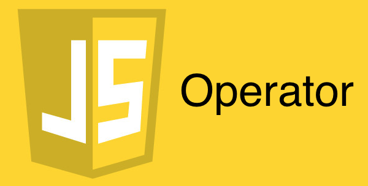

자알쓰란?
자바스크립트 알고 쓰자. (잘 쓰자는 의미도 담겨있다.)
자바스크립트라는 언어 자체는 내 기준에서는 설계 상 미스가 참 많다.
함수 단위의 스코프, 호이스팅, 동적 타입 등등
자바와 같은 깐깐(?)한 언어를 배우고 바라본 자스는 허점 투성이처럼 보였다.
애초에 자바스크립트는 어떠한 프로그램을 만들기 위해서 탄생했다기 보다는
웹 페이지에 입력값에 대한 유효성 검사(데이터가 공란인지 아닌지 등등)와 같은
페이지의 동적 제어가 주된 목적 + 짧은 개발 기간(넷 스케이프 사의 새로운 브라우저에 탑재 예정) 때문에
설계 상에 미스가 있을 수 밖에 없다고 나는 생각된다.
일종의 안전 장치가 없어서 개발자가 일일이 구현해주고, 신경써야 하는 느낌이었다.
그렇다고 해서 자바스크립트를 극혐하거나 그런 것은 아니고 매우 사랑한다.
또한 그 허점을 아는 사람은 허점을 보완해서 요리조리 피해서 잘 쓰겠지만…
잘 모르는 부분들은 잘못 써도 동작이 잘 되기 마련이다.
이는 지금 당장에는 큰 문제가 안 될지 모르겠지만, 추후에 대규모 웹 어플리케이션을 만들거나
직면할 문제로부터 미리 해방시키기 위해 처음부터 좋은 습관을 들여가는 것이 좋다고 생각한다.
그 여덟 번째 시리즈는 연산자를 주제로 진행하겠다.
캐스팅(Casting) 연산자
캐스팅이라 하면 형변환이랑 동일하다고 보면 된다.
Any -> String
|
|
Any -> Number
|
|
Any -> Boolean
|
|
= 연산자의 비밀
= 은 우항의 값을 좌항의 변수에 할당할 때 쓰는 할당 연산자이다.
하지만 모든 연산자에는 반환 값이 존재한다. 반환값 없는 연산자는 존재하지 않는다.
- a = 3에 의해 3이 a에 할당된다.
- b = a에 의해 a의 값인 3이 b에 할당된다.
- c = b에 의해 b의 값인 3이 c에 할당된다.
- = 연산자는 우항의 값을 반환하는 연산자이므로 3이 반환된다.
이렇게 = 연산자는 변수 할당문으로 쓸 수 있지만 그 자체가 연산자이기 때문에 표현식으로써의 기능도 충실히 수행할 수 있다.
표현식이기 때문에 변수에 할당할 수 있다는 것은 당연한 소리다.위를 보고 변수 할당 체이닝이라 부르려나..
쉼표(,) 연산자의 비밀
, 또한 연산자이다. 그 말은 반환값이 있다는 것이다.
우선 ,의 사용 사례를 보도록 하자.
쉼표 또한 연산자이고 가장 우측에 있는 녀석의 값을 반환한다는 사실을 알았다.
신기하다.
n제곱 연산자(ES2016+)
ES2016+이기 때문에 웬만해서는 바벨을 돌려야할 것이다.
기타 유용한 연산자
&&, ||와 같은 똑똑한 논리 연산자, ~(Tilde) 연산자도 참고해보자.